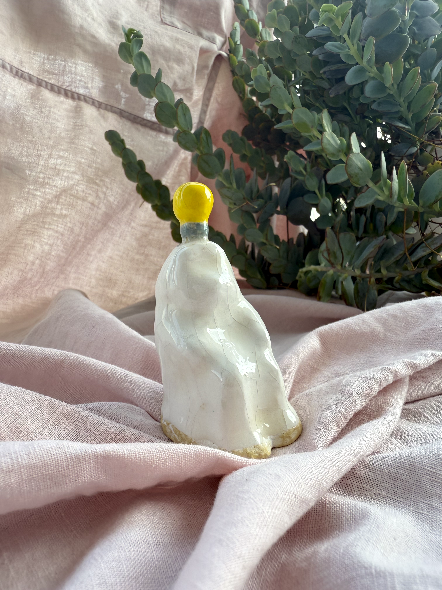

Physical Art
Perhaps it seems strange to find a physical art section among all the digital projects. However, throughout my process of exploration, working with different physical mediums became an unbreakable part of my narrative.
This section mainly contains my recent ceramic works. There is a genuine magic in the material itself. In its newborn stage, clay is soft, sticky, easily sculpted, and completely reusable. Yet, once fired, it gains a hardness greater than steel. Throughout the process of creating a physical piece, there are countless opportunities for flaws to appear—and unlike the digital screen, there is no Command Z. This unpredictability is its own magical element; during the journey of drying and firing, shapes, sizes, and colors all have their own art of changing. In comparison with making digital art, clay provides far less certainty, and demands a great deal more patience. Such drastically different, even opposite forms of art, work together to help me tell deeper stories under the same creative themes.
Ceratophrys
This collection is not a typical group of work. It was created in memory of an unforgettable research process that began with a mystery bone specimen from a museum. Throughout a five-week journey, I slowly discovered the names of each component of the skull, until the species was finally revealed: Ceratophrys ornata.


In memory of the specimen and this process, I created two drastically different pieces of art. One is a ceramic plate featuring the drawn documentation of the bone. After firing, this plate may be able to last for thousands of years, passed through human hands or buried deep in the soil—longlastingly documenting my findings and my joy in this project. However, porcelain is inherently fragile. With just a little mishandling, it could crash into pieces and never be complete again.

The other piece is an altered 3D model composed from a phone scan of the specimen, tracking every single divot and bump of the bone. If it is stored correctly, this 3D model could also last as long as humanity exists. Yet, it sits on a knife's edge: with a simple slip of a fingertip, the file could be easily deleted and lost forever.
Throughout this project, I experimented with three entirely different mediums: the bone specimen itself, traditional ceramics, and digital media—crossing the realms of biology, traditional craft, and digital art. In our digital era, people tend to believe that digitally stored files will be there forever, but we often forget the hidden costs behind data storage. Who will ultimately last longer—the fragile plate or the digital model? I guess we will only find out long, long after.
Working Beings
This ceramic piece is a deliberate replica of a historical artifact housed in a museum, which originally depicted the workers and environment of a traditional porcelain factory.
My version meticulously recreates the architecture and structural details of the original setting, with one crucial exception: the human laborers have been replaced. In their stead are imaginary beings with incredibly flexible limbs and an uncanny number of eyes. This substitution aims to evoke a jarring tension between familiarity and strangeness. At first glance, the piece presents as a highly traditional work of 青花瓷 Qinghuaci (blue and white porcelain). Yet, upon closer inspection, the realization that these craftsmen are non-human beings creates an immediate tension, leaving ample room for thought.

As technology advances, many forms of labor are being replaced by machinery, and now, artificial intelligence. Society frequently alienates these technologies, viewing them as monstrous forces that are slowly erasing humanity. But is that really true? Does a piece of work created through modern technology no longer belong to human heritage? Or are the shifts so subtle that, like the creatures in this porcelain factory, no one will notice until they look closer?
I Have an Idea
I Have an Idea is a sculpture created to mimic the experience of an individual surfing the internet. Featuring a white, cloth-like structure that completely covers the body and facial features of the figure underneath, the piece aims to express the strange sensation of navigating the digital landscape and communicating with complete strangers. Just like this figurine, our true emotions and identities are often smudged and blurred online. True joy may exist, but it is frequently hidden beneath the surface.

The lightbulb on the head relies on a very common metaphor for having an idea. However, in the digital world, who you are and what you feel is often treated as secondary to what you think or what value you can provide. People look for your perspectives long before they notice your emotions or your appearance. In many situations, this intellectual anonymity can be liberating and beneficial; in others, it can be deeply alienating. What do you see in this sculpture?